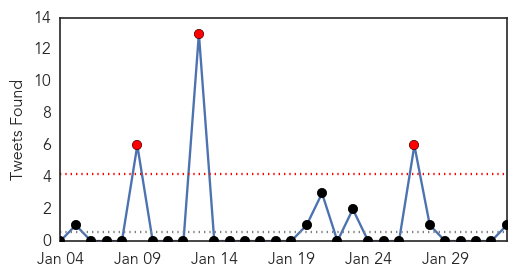
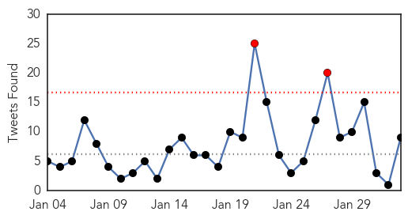
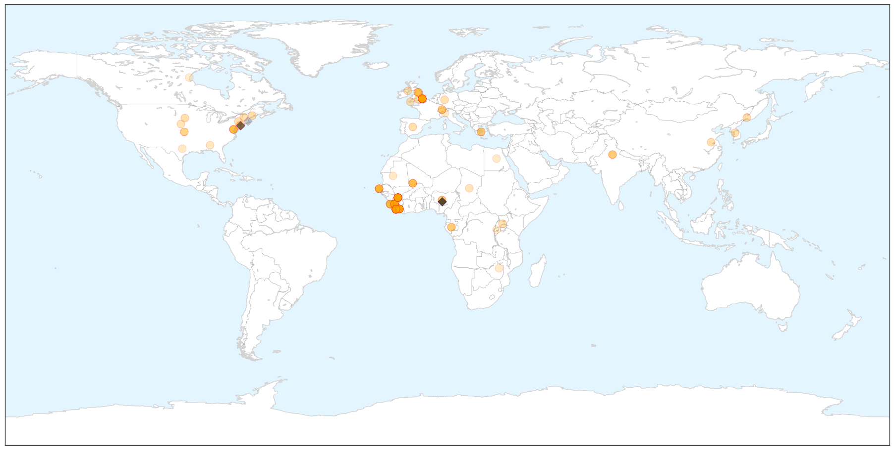

Unknown
30-Day Web Trend
0 alerts, 0 warnings

30-Day Twitter Trend
3 alerts, 0 warnings

Article Locations


Article Confidences

Top Articles:
- 0.960
- Reno Tahoe News Weather, Video -
- 0.933
- 2 die of Nipah virus in Naogaon
- 0.918
- Health agency officials respond to STD outbreak
- 0.917
- Chicago Tribune
- 0.917
- Chicago Tribune
- 0.917
- Chicago Tribune
- 0.917
- Chicago Tribune
- 0.917
- Chicago Tribune
- 0.917
- Chicago Tribune
- 0.917
- Chicago Tribune
- 0.917
- Chicago Tribune
- 0.917
- Chicago Tribune
- 0.917
- Chicago Tribune
- 0.917
- Chicago Tribune
- 0.917
- Chicago Tribune
- 0.917
- Chicago Tribune
- 0.917
- Chicago Tribune
- 0.917
- Chicago Tribune
- 0.917
- Chicago Tribune
- 0.917
- Chicago Tribune
- 0.917
- Chicago Tribune
- 0.917
- Chicago Tribune
- 0.917
- Chicago Tribune
- 0.917
- Chicago Tribune
- 0.917
- Chicago Tribune
- 0.915
- experts, National, Phnom Penh Post
- 0.871
- CSIRO employee's claim her water was contaminated with faeces rejected by tribunal
- 0.866
- Merkel says ceasefire must be restored in Ukraine
- 0.808
- West Texas News
- 0.751
- Warning over syphilis outbreak in Central Australia
- 0.734
- Crises abound in Noakhali hospital
- 0.726
- Multi Drug Resistant Bacteria Hits German Hospital, Kills 11
- 0.713
- 'Atypical' case of mad cow disease confirmed in Norway
- 0.673
- The Westside StoryThe Westside Story
- 0.673
- The Westside StoryThe Westside Story
- 0.669
- Insurer responds to ASIC concerns
- 0.626
- WHO donates medicines, medical instruments to Donetsk region
- 0.619
- Egypt: RRP6 Monthly Update - December 2014: Health - Egypt
- 0.613
- UN stepping up humanitarian efforts in Malawi’s flood-hit areas - Malawi
- 0.602
- Criticised Cameron says Saudi tip-off ‘saved British lives’
- 0.602
- DSK trial to offer ‘great show’, says brothel owner
- 0.602
- Iran launches Holocaust denial cartoon contest
- 0.602
- Head of UN Gaza inquiry to quit over Israeli criticism
- 0.602
- Greece’s anti-austerity drive gets boost from Washington
- 0.602
- Far right wins first round of French by-election
- 0.602
- Al-Jazeera journalist's colleagues still held in Egypt
- 0.602
- Egypt sentences 183 Brotherhood supporters to death
- 0.602
- Bomb rocks Nigerian city minutes after presidential rally
- 0.602
- ‘Accountant of Auschwitz’ to go on trial over camp deaths
- 0.596
- No reasons for ASF existence in Belarus now
Showing top 50 articles...
Top Tweets:
- 0.517
- RT: ISG - flu immunisation or masking if granted exemption for all health and residential care workers
Ebola
30-Day Web Trend
0 alerts, 0 warnings

30-Day Twitter Trend
2 alerts, 0 warnings

Article Locations

X

Article Confidences

Top Articles:
- 1.000
- Ebola virus: Second military health care worker flown back following needle accident with patient
- 1.000
- Nigerian Writer Turns The Tables On Ebola-Fearing America, Suggests Africa Screen Americans For Measles
- 1.000
- Second British Health Care Worker Moved to UK for Ebola Assessment
- 1.000
- Ebola virus death toll in West Africa nearing 9,000 — WHO
- 0.999
- Human Trials for Two New Ebola Vaccines Just Began in Liberia
- 0.999
- Ebola vaccines testing starts in Liberia in partnership between Liberian and US governments
- 0.999
- The world is closer to having a real weapon to fight Ebola
- 0.999
- Ebola vaccine trial gets under way
- 0.999
- Unhappy doctors; predict your next ER visit
- 0.999
- New Ebola scare as second military healthcare worker is flown back to England
- 0.999
- Worst Ebola outbreak in history: What you need to know
- 0.999
- Volunteers start getting Ebola vaccine in Liberia
- 0.999
- Senegal Puts 20 People on Watch for Ebola After First Case
- 0.999
- Tests Confirm Hospitalized Russian Aid Worker Not Infected With Ebola
- 0.999
- First Major Vaccine Trials In Liberia
- 0.998
- Liberia begins clinical trial for Ebola vaccines as outbreak ebbs
- 0.998
- CDC recommends looser Ebola monitoring than state quarantines for health workers
- 0.998
- Second healthcare worker brought back to England to be monitored for Ebola
- 0.998
- Ebola vaccine trial launches in Liberia
- 0.998
- The Courier Ebola vaccines trial starts in Liberia
- 0.998
- Liberia to Begin First Mass Trial of Preventive Ebola Vaccine
- 0.998
- Ebola Vaccine Trials Begin in Liberia
- 0.997
- Liberia begins clinical trial for Ebola vaccines as outbreak ebbs
- 0.997
- Liberia begins clinical trial for Ebola vaccines
- 0.997
- Liberia begins clinical trial for Ebola vaccines as outbreak ebbs
- 0.996
- Ebola vaccine trials to be carried out in Uganda
- 0.996
- Liberia Schools postponed for 2 weeks more -
- 0.996
- Liberia begins clinical trial for Ebola vaccines as outbreak ebbs
- 0.995
- Peter Penfold: Rebuilding Sierra Leone after Ebola
- 0.994
- Ebola victim still not free of virus
- 0.994
- Ebola fight enters new phase with vaccine trials in Africa (+video)
- 0.994
- Anti-Ebola vaccine trials to begin in Liberia
- 0.993
- Nurse is flown to UK in Ebola scare
- 0.992
- Malaria: The other epidemic in Sierra Leone
- 0.992
- First large-scale anit-ebola vaccine trials to begin
- 0.990
- Ebola Vaccines Trial Begins in Liberia
- 0.990
- Ebola Vaccines Trial Begins in Liberia
- 0.990
- Ebola Vaccines Trial Begins in Liberia
- 0.989
- Ebola crisis: Liberia bounces back
- 0.988
- African Union criticized Over Poor Record in the Early Stages of Ebola Epidemic
- 0.988
- Ebola Virus Remedy: Faces of Liberia’s Vaccine Trials
- 0.988
- Updated Information Re: Potential Implications for Travel Because of Ebola in Parts of West Africa, Feb. 2, 2015
- 0.987
- 'Ebola vaccine is safe'
- 0.987
- UK military experts warn of ‘weaponized Ebola’ – report — RT UK
- 0.986
- Ebola vaccine trial on volunteers begins in Liberia
- 0.986
- Ebola vaccine trial begins in secret location in Liberia
- 0.986
- Ebola vaccines testing starts in Liberia
- 0.985
- Ebola vaccines testing starts in Liberia in partnership between Liberian and US governments
- 0.985
- Ebola vaccines testing starts in Liberia
- 0.985
- Ebola crisis: First large-scale vaccine trials to begin
Showing top 50 articles...
Top Tweets:
- 0.998
- Ebola Virus Disease also known as EVD is a deadly illness caused by the Ebola Virus
- 0.893
- Ebola takes a toll on West Africa's surgeons as 800 health care personnel have been infected w/ virus http://t.co/MUQd7sg5fQ
- 0.891
- The Ebola Virus is then transmitted to other humans by human-to-human transmission through bodily fluids & infected surfaces
- 0.763
- Rachelle was a senior staff nurse at the Royal London Hospital when she heard about the Ebola outbreak. via EbolaStory
- 0.758
- RT: Ebola survivors are playing a huge role in stopping the spread of the disease. Read Mariatu's story http://t.co/eP7CfG1bCs Eb…
- 0.595
- UK has flown home a healthcare worker who may have been exposed to Ebola in SL. 2nd such case in several days both needlestick events 1/2
- 0.541
- Ebola virus epidemic: global picture and impact on children unicef http://t.co/E9xG7dds5e
- 0.525
- RT: SierraLeone recorded 68 new confirmed Ebola cases last week. That would have been a daily average in November.... http:/…
- 0.517
- RT: Preparedness is an expensive business. @Eboladeeply asks if Guinea-Bissau could deal with an Ebola outbreak. http://t…